Nguồn: docs/superpowers/specs/2026-11-08-audit-ui/bao-cao.md mục 6.2. Mỗi khu gồm: TRƯỚC (ảnh chụp web, main, seed demo 14/09/2026) và SAU (vẽ lại bằng token web). Mỗi khu có một dòng lý do và chip Đụng: … cho biết đụng luật / mockup nào.
Mặc định khung 1440 tối, khung 375 sáng; nút bên dưới đảo cả hai (ảnh TRƯỚC đổi theo). Nhóm A (chữ, màu, a11y) đang được sửa qua đêm, không có trong tệp này.
Lý do: thẻ "Điều hướng" lặp ô số ("Việc của tôi ›", "Thi tháng này ›", "Case chưa có PA ›") và menu, chiếm 1/4 bề ngang; ở 375 nó đứng TRÊN bảng chính. Link không có chỗ khác ("Hồ sơ GV của tôi", "Lịch thi", "Báo cáo") lên cạnh tiêu đề. Đơn vị "HV", "lượt" lặp ở mọi ô → lên đầu cột, ô chỉ còn số; số 0 mờ (nhóm A làm phần số 0).
Giữ: mọi ô số bấm mở panel (V11); "Chờ bạn duyệt" của QL giữ nguyên chỗ (không lặp); tên lớp là link. Bỏ: thẻ Điều hướng; tên chính mình ở dòng đầu (TQ1).
Chủ SP chọn: A · bỏ thẻ Điều hướng ở cả 3 vai, link riêng lên cạnh tiêu đề, đơn vị lên đầu cột (khuyến nghị) / B · giữ như nay
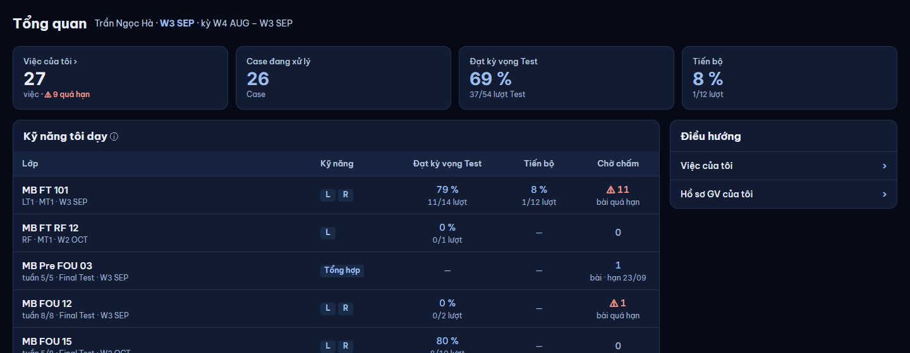
| Lớp | Kỹ năng | Đạt kỳ vọng Test · lượt | Tiến bộ · lượt | Chờ chấm · bài |
|---|---|---|---|---|
| MB FT 101LT1 · MT1 · W3 SEP | LR | 79 %11/14 | 8 %1/12 | 11quá hạn |
| MB FT RF 12RF · MT1 · W2 OCT | L | 0 %0/1 | — | 0 |
| MB Pre FOU 03tuần 5/5 · Final Test · W3 SEP | Tổng hợp | — | — | 1hạn 23/09 |
| MB FOU 12tuần 8/8 · Final Test · W3 SEP | LR | 0 %0/2 | — | 1quá hạn |
| MB FOU 15tuần 5/8 · Final Test · W2 OCT | LR | 80 %8/10 | — | 0 |
| Lớp | Đạt MT · HV | SOS hiện tại · HV | Case chưa PA | Thi tháng này · HV |
|---|---|---|---|---|
| MB FT 10133 HV · Trần Ngọc Hà | — | SOS 1 4 SOS 2 2 SOS 3 5 | 31 | 0 |
| MB FT 1057 HV · Lâm Quang Vinh | 67 %2/3 | SOS 1 1 SOS 2 2 SOS 3 2 | 4 | 0 |
| MB FT RF 123 HV · Lê Minh Khoa | — | SOS 2 1 | 2 | 0 |
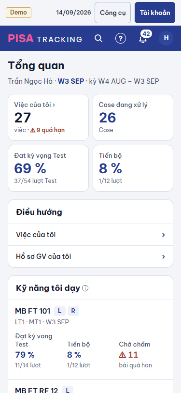
Lý do: ô "Chờ KQ · Lộ trình tiếp 0 · 1" có hai số trong một ô; thẻ "Thi thật" gồm 3 dòng link KHÔNG có số, mở đúng các tập mà ô số đã mở; thẻ "Điều hướng" trùng menu. Sau: 4 ô, mỗi ô một số, bấm mở panel như nay.
Giữ: 3 tập (Thi tháng này, Chờ KQ thi thật, Chưa chốt lộ trình tiếp) — giờ là 3 ô số. Bỏ: thẻ "Thi thật" (link), thẻ "Điều hướng" ("HV của tôi" lên cạnh tiêu đề).
Chủ SP chọn: A · 4 ô số, bỏ thẻ "Thi thật" + "Điều hướng" (khuyến nghị) / B · giữ như nay
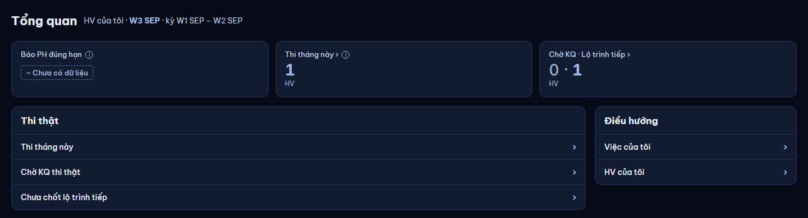
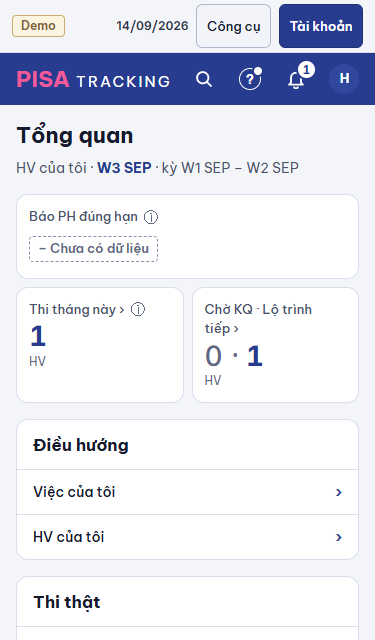
Lý do: hôm nay cùng một viên tròn mang ba nghĩa theo màu — đỏ = số quá hạn, vàng = số gần hạn, trắng = tổng dòng (badgeTab). "Chấm điểm 4" có 7 dòng; "Vận hành 2" lại là tổng. Sau: badge tab = dòng cần làm ngay (quá hạn + hạn hôm nay), đúng luật badge menu V13; 0 → không badge; rê / trình đọc màn: "4 quá hạn trong 7 việc". Tổng dòng chỉ ở đầu trang.
Giữ: "27 việc · 9 quá hạn" đầu trang; tab mặc định = tab đầu có quá hạn. Bỏ: badge vàng / trắng.
Chủ SP chọn: A · badge tab = dòng cần làm ngay, như badge menu (khuyến nghị) / B · giữ ba nghĩa theo màu
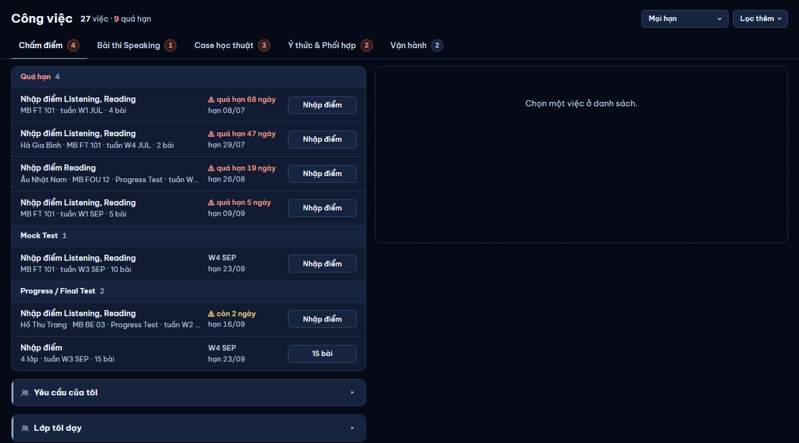
Số minh hoạ theo seed. Badge vàng chỉ còn khi tab không quá hạn nhưng có việc hạn hôm nay (2); không còn badge trắng.
Lý do: trong tab "Chấm điểm", dòng nào cũng mở đầu "Nhập điểm …" rồi nút lại ghi "Nhập điểm"; nhóm trộn hai trục (Quá hạn theo hạn, Mock Test theo loại), việc MT quá hạn và chưa quá hạn nằm hai nơi. Sau: nhóm theo loại, quá hạn lên đầu nhóm (đúng V11 "quá hạn lên đầu nhóm"); tên = kỹ năng; hạn một dòng; dòng gộp dùng mẫu "n lớp ▾" như "n em ▾".
Giữ: nút "Nhập điểm", panel phải, "Việc tiếp ›" đi hết nhóm, khay em, "Yêu cầu của tôi", "Lớp tôi dạy". Bỏ: chữ "Nhập điểm" trong tên dòng; nhóm "Quá hạn" riêng; mã tuần ở cột hạn.
Chủ SP chọn: A · nhóm theo loại + quá hạn lên đầu, tên = kỹ năng, "4 lớp ▾" (khuyến nghị) / B · chỉ bỏ chữ "Nhập điểm" lặp, giữ nhóm như nay
Lý do: V18 (27/10) nói ở 375 "chạm cả dòng, hạn dưới tên, ẩn nút"; mockup v12 (05/11, mới hơn) ghi "nút giữ nguyên như web hiện tại". Web đang giữ nút → tên việc gãy 2 dòng, dòng phụ 2–3 dòng, mỗi việc cao ~110 px. Khuyến nghị: A — ít chữ gãy, cao ~64 px, vẫn một chạm mở đúng panel việc (có nút "Lưu · việc tiếp" trong panel).
Chủ SP chọn: A · ẩn nút, chạm cả dòng theo V18 (khuyến nghị) / B · giữ nút theo v12
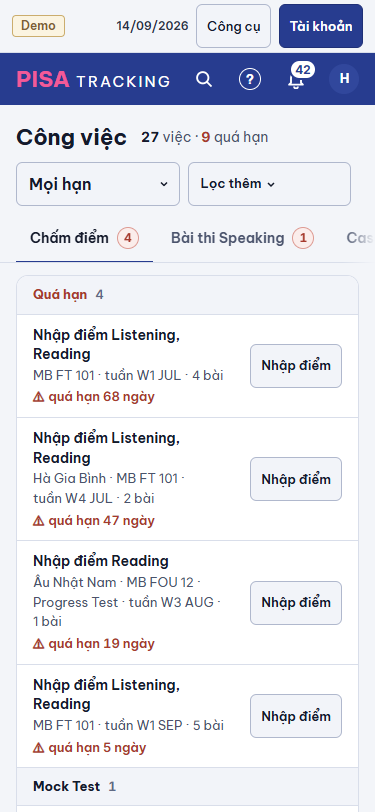
Lý do: cùng việc chấm có hai danh sách, hai cách đếm (Test › Chấm Test "11 việc · 39 bài" và Công việc › Chấm điểm "27 việc"); cùng danh sách duyệt có hai trang hai dáng (Công việc › Chờ bạn duyệt và trang "Chờ duyệt"). Sau: làm việc chỉ ở Công việc; Test = lịch + kế hoạch; Hộp duyệt = hàng lọc trong tab "Chờ bạn duyệt".
Giữ: mọi thao tác (Nhập điểm, Duyệt, Từ chối…, chọn nhiều, "Đã xử lý (30 ngày)", lọc theo lớp). Link cũ /test/cham và trang Chờ duyệt chuyển về đúng tab + bộ lọc. Bỏ: tab "Chấm Test"; trang "Chờ duyệt" riêng.
Chủ SP chọn: A · gộp cả hai: bỏ tab Chấm Test và trang Chờ duyệt (khuyến nghị) / B · chỉ gộp Hộp duyệt / C · giữ như nay
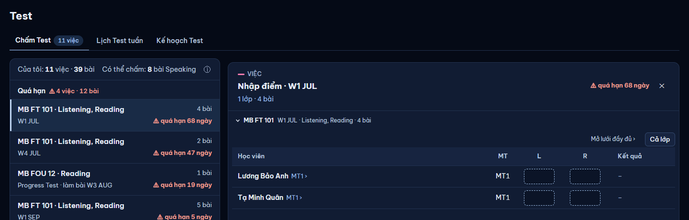
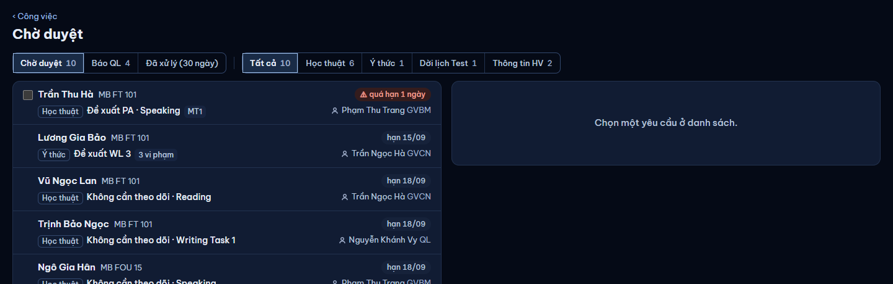
Lý do: mỗi dòng có "Đặt tháng · Chốt ngày" — 86 link giống nhau trên một màn, kéo mắt khỏi tên em và điểm. Sau: nút "Đặt lịch ▾" hiện ở dòng đang rê / đang chọn / có bàn phím focus; 375 luôn hiện. Phần chữ (một dòng "Chưa có lịch", ẩn cột trống) đã ở nhóm A.
Giữ: hai thao tác Đặt tháng dự kiến / Chốt ngày thi (trong menu), mở rộng dòng, lọc Cần làm / Tất cả. Bỏ: hai link luôn hiện.
Chủ SP chọn: A · một nút "Đặt lịch ▾" hiện khi rê / chọn (khuyến nghị) / B · giữ hai link luôn hiện
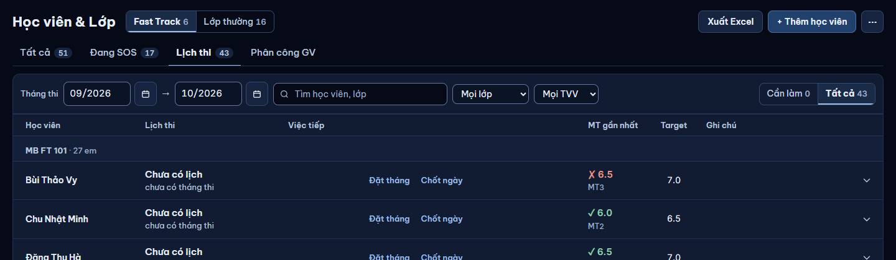
| Học viên | Lịch thi | Việc tiếp | MT gần nhất | Target | |
|---|---|---|---|---|---|
| MB FT 101 · 27 em | |||||
| Bùi Thảo Vy | Chưa có lịch | ✗ 6.5MT3 | 7.0 | ||
| Chu Nhật Minh | Chưa có lịch | ✓ 6.0MT2 | 6.5 | ||
| Đặng Thu Hà | Chưa có lịch | ✓ 6.5MT2 | 7.0 | ||
| Lê Minh Khang | Dự kiến 01/2027 | ✓ 6.0MT2 | 6.5 | ||
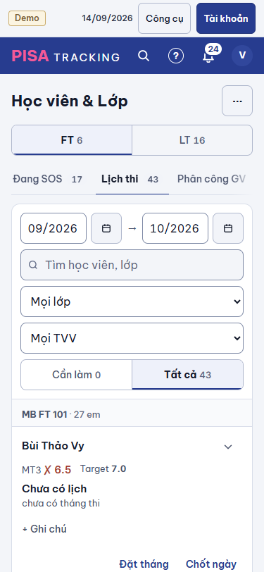
Lý do: cột "MT" lặp chip lượt ngay cạnh tên ("Hồ Ngọc Diệp MT1 ›" | "MT1"); "49 bài còn chấm" = 98 − 49; viên "Đang chấm" trên 7/8 lớp không nói thêm gì. Sau: lưới rộng hơn một cột cho ô điểm; dải số "đã chấm" + "quá hạn"; viên chỉ khi "Chưa chấm" hoặc "✓ Đã chấm". Áp cho cả lưới Nhập điểm lớp và panel Công việc (HSL6).
Giữ: chip lượt là link; mọi ô nhập, phím Enter / Tab; ô số bấm mở danh sách; "GV chấm S". Bỏ: cột MT; ô "còn chấm" (số còn trong panel của ô đã chấm); viên "Đang chấm".
Chủ SP chọn: A · bỏ cột MT + dải số hai ô + viên chỉ khi khác thường (khuyến nghị) / B · chỉ bỏ cột MT / C · giữ như nay
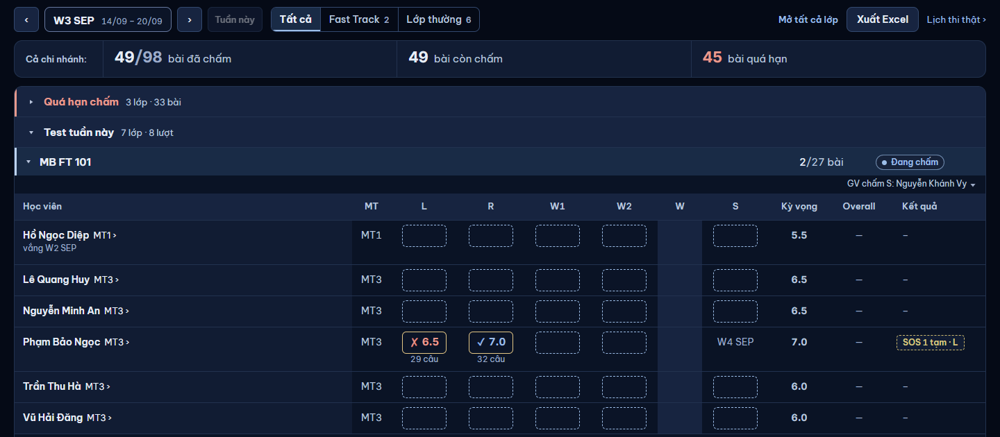
| Học viên | L | R | W1 | W2 | S | Kỳ vọng | Overall | Kết quả |
|---|---|---|---|---|---|---|---|---|
| Hồ Ngọc DiệpMT1vắng W2 SEP | 5.5 | — | — | |||||
| Lê Quang HuyMT3 | 6.5 | — | — | |||||
| Phạm Bảo NgọcMT3 | ✗ 6.5 | ✓ 7.0 | W4 SEP | 7.0 | — | SOS 1 tạm · L |
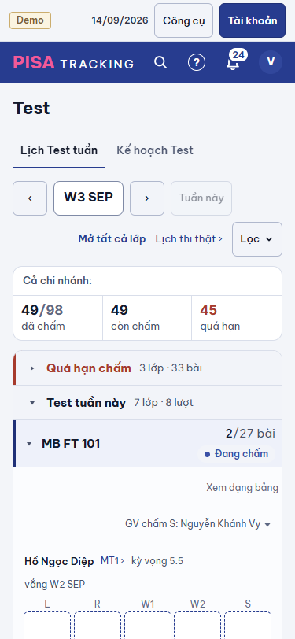
Lý do: "TVV Lê Thu" lặp ở 25/33 dòng. Sau: đầu trang ghi TVV của lớp theo số em ("Lê Thu · 25 em", "Phan Mai · 2 em"); dưới tên chỉ ghi TVV khi em thuộc TVV khác TVV đông nhất, hoặc chưa có TVV ("Chưa có TVV" — việc cần làm). Ngoại lệ 11 px giữ nguyên cỡ, chỉ bớt số lần hiện.
Giữ: cỡ 11 px, vị trí dưới tên, lọc theo TVV (Bộ lọc thêm). Bỏ: 25 dòng "TVV Lê Thu" giống nhau.
Chủ SP chọn: A · TVV dưới tên chỉ khi khác TVV đông nhất / chưa có (khuyến nghị) / B · giữ trên mọi dòng
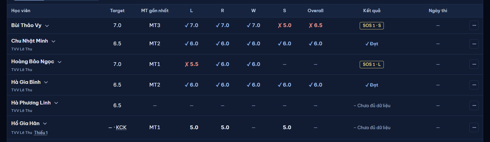
| Học viên | Target | MT gần nhất | L | R | W | S | Overall | Kết quả |
|---|---|---|---|---|---|---|---|---|
| Bùi Thảo VyChưa có TVV | 7.0 | MT3 | ✓ 7.0 | ✓ 7.0 | ✓ 7.0 | ✗ 5.0 | ✗ 6.5 | SOS 1 · S |
| Chu Nhật Minh | 6.5 | MT2 | ✓ 6.0 | ✓ 6.0 | ✓ 6.0 | ✓ 6.0 | ✓ 6.0 | ✓ Đạt |
| Hoàng Bảo Ngọc | 7.0 | MT1 | ✗ 5.5 | ✓ 6.0 | ✓ 6.0 | — | — | SOS 1 · L |
| Kiều Thảo NhiTVV Phan Mai | 6.5 | MT2 | ✗ 5.5 | ✗ 5.5 | ✗ 5.5 | ✗ 5.5 | ✗ 5.5 | SOS 3 · L, R, W, S |
Lý do: Phân tích › Ý thức có cột trạng thái "⚠ Quá hạn" và ô "2 quá hạn" — G8 nói báo cáo không có cột quá hạn (việc quá hạn đã ở Công việc). Kết quả MT ghi hai số mỗi ô ("1 / 50 %"), nhiều ô "0 / 0 %". Sau: cột "Chưa xử lý" (số lần) thay trạng thái; ô Kết quả MT ghi số HV, % ở rê / ở hàng Cộng; 0 mờ.
Giữ: mọi số bấm mở danh sách; Xuất Excel; bộ chọn thời gian. Phương án khác: giữ "quá hạn" và ghi ngoại lệ vào G8.
Chủ SP chọn: A · bỏ "quá hạn" khỏi Phân tích, một số mỗi ô (khuyến nghị) / B · giữ "quá hạn", ghi ngoại lệ vào G8
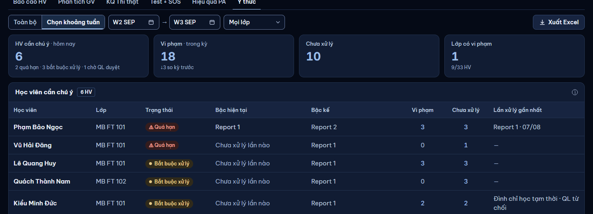
| Học viên | Lớp | Bậc hiện tại | Bậc kế | Vi phạm | Chưa xử lý | Lần xử lý gần nhất |
|---|---|---|---|---|---|---|
| Phạm Bảo Ngọc | MB FT 101 | Report 1 | Report 2 | 3 | 3 | Report 1 · 07/08 |
| Vũ Hải Đăng | MB FT 101 | Chưa xử lý lần nào | Report 1 | 0 | 1 | — |
| Lương Gia Bảo | MB FT 101 | WL 2 | Report 7 | 3 | 0 | WL 3 · Chờ QL duyệt |
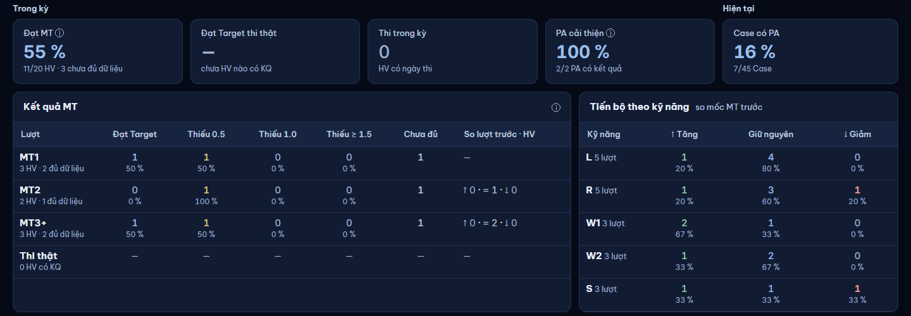
| Lượt | Đạt Target · HV | Thiếu 0.5 | Thiếu 1.0 | Thiếu ≥ 1.5 | Chưa đủ | So lượt trước |
|---|---|---|---|---|---|---|
| MT13 HV · 2 đủ dữ liệu | 1 | 1 | 0 | 0 | 1 | — |
| MT22 HV · 1 đủ dữ liệu | 0 | 1 | 0 | 0 | 1 | Tăng 0 · Giữ 1 · Giảm 0 |
| MT3+3 HV · 2 đủ dữ liệu | 1 | 1 | 0 | 0 | 1 | Tăng 0 · Giữ 2 · Giảm 0 |
Lý do: hồ sơ lớp dùng "‹ Học viên & Lớp" chữ trần + "‹ 1/6 · Fast Track ›"; hồ sơ HV dùng nút viền + "‹ Trước 1/33 · Lớp MB FT 101 Sau ›"; ở 375 các nút chỉ cao 20–24 px. Dòng loại panel "VIỆC · CHẤM ĐIỂM" in hoa (G13 cấm) và có vạch hồng (V2: hồng chỉ để nhận diện). Sau: một dáng nút, một mẫu chữ, cao 32 (375: 44); dòng loại chữ thường 13 / 600 mờ.
Chủ SP chọn: A · một dáng Quay lại / Trước–Sau + dòng loại chữ thường, không vạch hồng (khuyến nghị) / B · chỉ một dáng Quay lại, giữ dòng loại in hoa
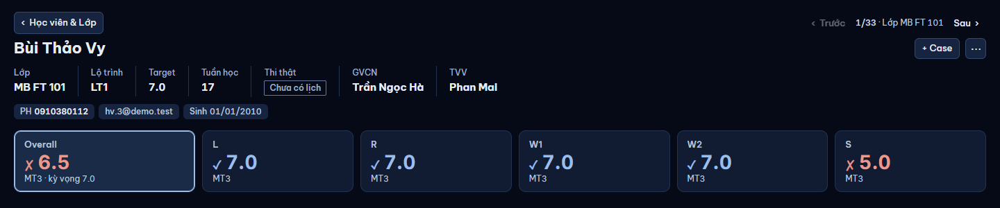
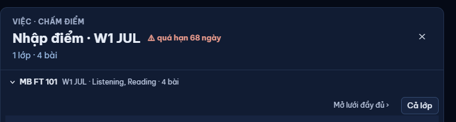
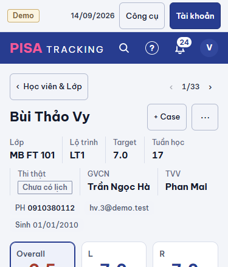
Lý do: dòng tóm tắt Case "Chờ xác nhận PA · PA Tutor · đến lúc thi · đã lên kế hoạch · Phạm Thu Trang" là một câu năm trường; Lưu trữ "Beginner · Monbay · GVCN … · 2 HV từng học"; hồ sơ GV "⚠ quá hạn 6 ngày Kết quả PA R · kỳ W4 AUG – W1 SEP" gãy hai dòng. Sau: mỗi loại thông tin một dáng, một cột (trạng thái = viên, người = chữ mờ + biểu tượng, hạn = cột phải).
Chủ SP chọn: A · tách trường ở 3 chỗ này (khuyến nghị) / B · giữ chuỗi "a · b · c"
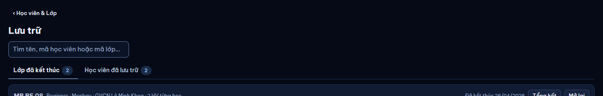
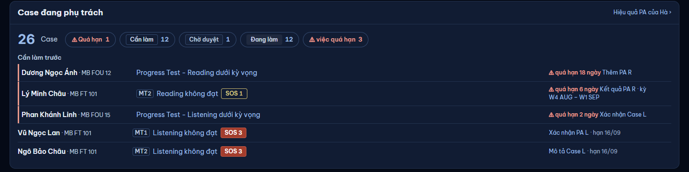
| Học viên | Case | Việc tiếp | Hạn |
|---|---|---|---|
| Dương Ngọc ÁnhMB FOU 12 | Progress Test · Reading dưới kỳ vọng | Thêm PA · R | 18 ngày |
| Lý Minh ChâuMB FT 101 | MT2 Reading không đạt SOS 1 | Kết quả PA · R kỳ W4 AUG – W1 SEP | 6 ngày |
| Vũ Ngọc LanMB FT 101 | MT1 Listening không đạt SOS 3 | Xác nhận PA · L | hạn 16/09 |
Lý do: panel hẹp mà đầu danh sách có "1–10 / 26 mục ‹ 1 2 3 › Mỗi trang 10 20 50" — 9 điều khiển trước dòng đầu tiên. Sau: 20 dòng đầu, cuối danh sách "Xem thêm 6 Case"; dòng đếm "26 Case" ở đầu. Dòng đọc Turso: không đổi (danh sách đã nạp một lần — kiểm khi làm).
Chủ SP chọn: A · cuộn + "Xem thêm" (khuyến nghị) / B · giữ phân trang
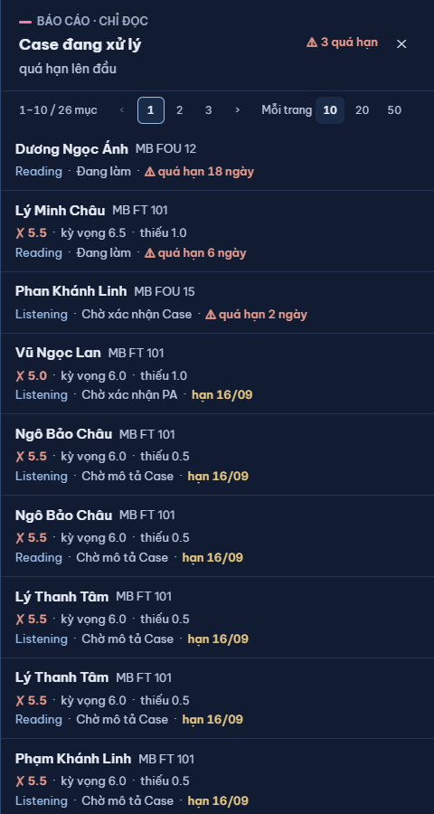
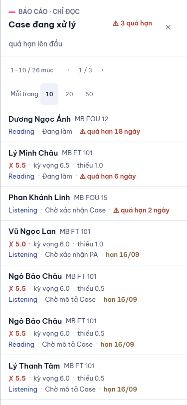
Lý do: ở 375 bảng tài khoản vẫn là bảng cuộn ngang (email bị cắt); ba select gốc của trình duyệt chồng nhau chiếm nửa màn trước khi thấy người đầu tiên. Sau: mỗi tài khoản một thẻ; tìm + "Lọc ▾" một hàng (chi nhánh, vai trò, kỹ năng, nhóm trong một tấm dưới); ô chọn dùng dáng chung của web.
Giữ: mọi bộ lọc, Đang dùng / Đã xoá, + Tạo tài khoản, Sửa, ⋯. Bỏ: thẻ "Đăng ký chờ duyệt" khi rỗng (nhóm A).
Chủ SP chọn: A · thẻ + "Lọc ▾" ở 375 (khuyến nghị) / B · chỉ đổi bảng thành thẻ, giữ 3 ô chọn
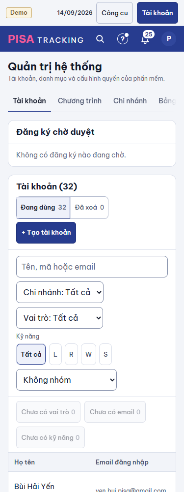
| Khu | Mã trong báo cáo | Đụng | Khuyến nghị |
|---|---|---|---|
| B1 | C1 · TQ1 · TQ3 | V10 · V13 | Duyệt |
| B2 | TQ4 | V10 | Duyệt |
| B3 | C8 | S11 / V13 | Duyệt |
| B4 | CV1 · CV2 · CV3 · CV5 | V18 · v12 | Duyệt |
| B5 | CV10 | V18 ↔ v12 | Chọn A |
| B6 | CV11 · CV12 | góc nhìn | Duyệt (đổi đường cũ → tab) |
| B7 | HL3 (gộp link) | thao tác | Duyệt — chủ SP 08/11: bấm thanh (dòng) vẫn mở rộng thông tin HV như nay |
| B8 | T1 · T3 · T4 · HSL6 | UI-LICH-TUAN | Duyệt |
| B9 | HSL4 | G13 ngoại lệ | Chủ SP 08/11 chọn B — giữ TVV trên mọi dòng |
| B10 | PT3 · PT1 · PT2 | G8 | Chủ SP 08/11: duyệt phần Ý thức (bỏ quá hạn); bảng Kết quả MT GIỮ như cũ |
| B11 | C4 · C7 · C13 | NEN-PANEL · G13 · V2 | Duyệt |
| B12 | C14 · LT1 · GV2 · GV4 | M10 | Duyệt |
| B13 | OS1 | V11 | Duyệt |
| B14 | QT5 · QT6 | DESIGN Layout | Duyệt |
Không có trong mockup (đã sang nhóm A hoặc chờ xác minh): xem bao-cao.md mục 6.1 và 6.3. Không đề xuất lại U02. Không đổi luật nghiệp vụ nào.